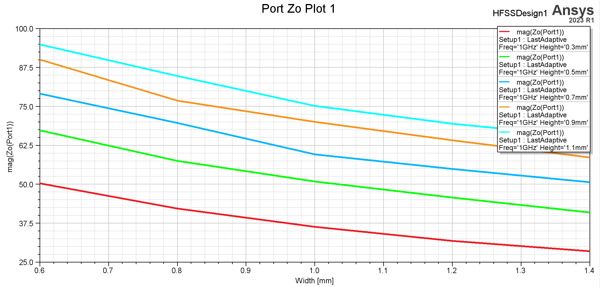
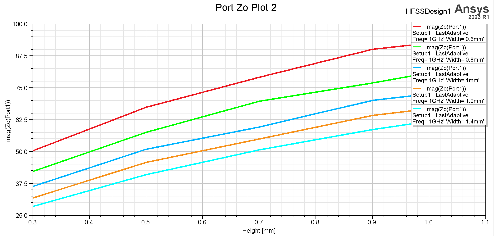
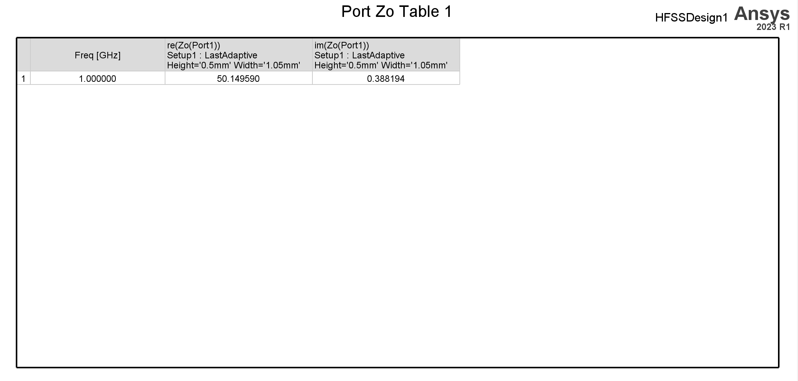

学习内容
Optimetrics 简介参考这篇博客。
以一个微带线特征阻抗分析实例来学习 Optimetrics 模块进行参数扫描分析、优化设计、调谐分析、以及灵敏度和统计分析的具体操作。
假设微带线的宽度为 w，介质层的厚度为 h，介质的相对介电常数为 e ，根据理论分析可知，则微带线的特征阻抗：
Z0=2πϵe376.7ln[w/h6+(2π−6)e−(w/h30.67)0.7528+1+(2h/w)2]ϵe=2ϵr+1+2ϵr−1(1+w10h)−0.564(1+491ln(w/h)2+0.432(w/h)2+(w/52h)2+18,71ln[1+18.1hw])(s+3s−0.9)0.053
初始设计中，微带线材料为铜箔，厚度为 35μm (1盎司)，宽度为 1mm；介质层使用 FR4 材料，厚度为0.5mm，空气腔 长 X 宽 X 高为 16mm×10mm×5mm 。
选择模式驱动求解，空气腔的前后表面设置为波端口激励，求解频率设置为 1GHz 。
- 定义和使用变量
- 首先定义两个设计变量 width 和 height ，分别用于表示微带线的宽度和介质层的厚度。
- 因为微带线始终位于介质层正上方，同时为了让微带线始终位于介质层的中心位置，所以微带线起始点坐标也需要使用变量表示，坐标设置为 (-8mm，-width/2，height)。
- 参数扫描分析
- 分析微带线的特征阻抗随着微带线宽度 width 和介质层厚度 height 的变化关系。
- 优化设计
- 优化设计的目标是:当工作频率为 1GHZ 时，在保持介质层厚度 height=0.5mm 不变的情况下，改变微带线宽度 width，使微带线的特征阻抗达到 50Ω。
- 调谐分析
- 手动改变变量 height 和 Width 的值，使用调协分析功能实时显示求解结果。
- 灵敏度分析
- 从优化分析结果可知，在 width=0.806mm，height=0.5mm 时微带线的特征阻抗约为 50Ω；这里在 width=0.806mm，height=0.5mm 附近分析两个变量的变化对微带线的特征阻抗的影响。
- 统计分析
- 假设 width 和 height 制造误差为 ±10%，且均匀分布，分析此时微带线的特征阻抗的统计分布情况。
定义变量并进行参数扫描分析
在特定 Hight 下，微带线的特征阻抗随 Width 的变化曲线：

在特定 Width 下，微带线的特征阻抗随 Hight 的变化曲线：

对宽度进行优化分析
设置优化范围并进行优化分析，通过优化数据再次仿真，得到数据：

后面的几项设置也都是在 HFSS > Properties 中进行，就不列举了。